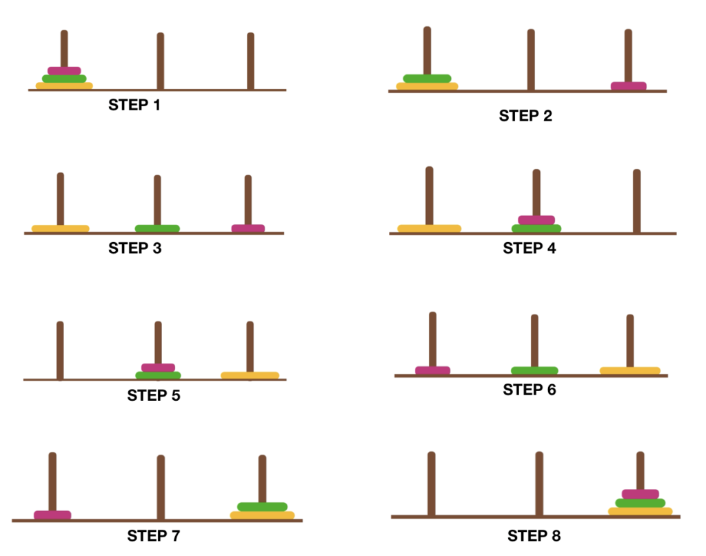

Défis
Écrire un programme qui résout le problème des Tours de Hanoï.

Le problème consiste en trois poteaux (A, B et C) et un certain nombre de disques de différentes tailles, empilés par ordre décroissant de taille sur le poteau A. L’objectif est de déplacer tous les disques du poteau A vers le poteau C, en suivant les règles suivantes :
- Vous ne pouvez déplacer qu’un disque à la fois.
- Un disque ne peut être placé que sur un autre disque plus grand ou sur un poteau vide.
Votre programme doit demander le nombre de disques à déplacer
net afficher la séquence de mouvements nécessaires pour résoudre le problème, en respectant les règles ci-dessus.Votre programme doit afficher chaque mouvement sous la forme “Déplacez un disque de A vers C”.
Exemple de sortie pour
n = 3:Déplacez un disque de A vers C Déplacez un disque de A vers B Déplacez un disque de C vers B Déplacez un disque de A vers C Déplacez un disque de B vers A Déplacez un disque de B vers C Déplacez un disque de A vers CCe qui correspond aux étapes suivantes :
